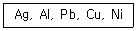
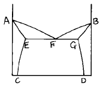
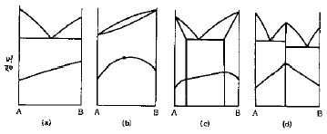
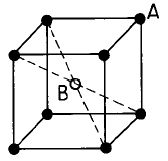
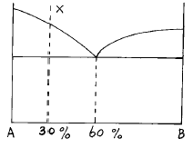
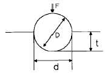
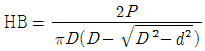
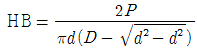

금속재료산업기사 (2003-05-25 기출문제)
1과목: 금속재료
1. 다음 중 불변강이 아닌 것은?
- 인바(invar)
- 엘린바(elinvar)
- 프라티나이트(platinite)
- 수퍼말로이(supermalloy)
(정답률: 60%)

2. 탄소 함유량에 따라 탄소강의 용도로 분류한 것 중 잘못 설명된 것은?
- 0.⑤-0.3%C : 강도만을 요구하는 경우
- 0.3-0.45%C : 가공성과 강인성을 동시에 요구하는 경우
- 0.45-0.65%C :강인성과 내마모성을 동시에 요구하는 경우
- 0.65-1.2%C : 내마모성과 경도를 동시에 요구하는 경우
(정답률: 42%)
3. 황동의 자연균열 방지책이 아닌 것은?
- 도료
- 아연도금
- 저온 응력제거 풀림
- 산화물 피막형성
(정답률: 84%)
4. 형상기억 합금은 변형응력을 가할 때는 일반 금속과 같이 소성변형이 발생한다. 이들 변형은 어느 변태온도 이상의 범위로 가열하면 변형 전의 상태로 돌아가는 특성을 가지고 있다. 이 변태온도는?
- A0
- A6
- Ar'
- Ar"
(정답률: 72%)
5. 금속변태 중 동소변태를 틀리게 나타낸 것은?
- 원자배열이 바뀐다.
- 격자배열의 변화가 발생한다.
- 자성변화를 발생한다.
- 일정온도에서 불연속적인 성질변화를 일으킨다.
(정답률: 72%)
6. 구리계 중에서 무급유 베어링(오일레스 베어링)으로 가장 많이 사용되는 것은?
- Cu - Pb - Ni
- Cu - Pb - Al
- Cu - Sn - Cr
- Cu - Sn - C
(정답률: 47%)
7. 분말을 제조하는 분말 야금의 제조 공정이 아닌 것은?
- 산 화
- 혼 합
- 압축 성형
- 예비 소결
(정답률: 65%)
8. 금속이 용해할 때는 시간이 지나도 온도가 올라가지 않는 다.즉 금속 전부가 용해 해야만 온도가 올라가는 현상은?
- 열전도
- 비열
- 용융 잠열
- 비중
(정답률: 94%)
9. 금속판에 힘을 주어 구부리면 변형되는데 그 힘을 없애도 그 변형은 남게 되는 것은?
- 소성변형
- 의탄성변형
- 탄성변형
- 크리프변형
(정답률: 79%)
10. 다음 중 섬유강화 금속은?
- NFRP
- FRM
- MEM
- WP
(정답률: 93%)
11. 탄소강재에서 구조용과 공구용 강재를 구분하는 탄소함량(%)은?
- 약 0.6
- 약 2.0
- 약 3.5
- 약 6.7
(정답률: 46%)
12. 오스테나이트 스테인리스강의 주 성분으로 맞는 것은?
- Ni - Mo - Co
- Cr - W - V
- Cr - Ni - Fe
- Ni - Co - Cu
(정답률: 58%)
13. 용융점이 가장 낮은 금속은?
- Ti
- Fe
- Ni
- Al
(정답률: 67%)
14. 탄소강에서 충격값을 저하시켜 상온 취성의 원인이 되는 주 원소는?
- Mn
- P
- Si
- S
(정답률: 64%)
15. 반도체적 특성을 이용하여 전자 공업에서 많이 사용되고 있는 금속은?
- Ge
- Fe
- S
- Hg
(정답률: 72%)
16. 탄소강에서 나타나는 조직과 결정구조가 틀리게 짝지어진 것은?
- α-Fe : BCC
- γ-Fe : FCC
- δ-Fe : HCP
- Fe3C : 금속간화합물
(정답률: 69%)
17. PR형 열전대를 이용한 냉접점 20℃에서 미터의 지시온도가 850℃라면 참온도는? (단, 보정계수는 0.5이다)
- 760℃
- 820℃
- 860℃
- 920℃
(정답률: 53%)
18. 가공성이 가장 좋은 금속의 결정격자는?
- 면심입방격자
- 체심입방격자
- 조밀육방격자
- 정방격자
(정답률: 86%)
19. 6 : 4 황동에 1∼2% 철을 첨가한 동합금은?
- 인바
- 쾌삭강
- 델타 메탈
- 암코철
(정답률: 75%)
20. 구리에 대한 일반적인 설명 중 맞는 것은?
- 전기전도도가 낮다.
- 열전도도가 낮다.
- 내식성이 높다.
- 취성이 높다.
(정답률: 70%)
2과목: 금속조직
21. 냉간 가공에서 전위밀도와 강도가 증가되는 주된 이유는?
- 가열하여 회복이 일어나므로
- 가공경화한 소성변형에 의해서
- 금속의 변형에너지가 감소되므로
- 전위운동을 촉진하여 인성을 증가시키므로
(정답률: 72%)
22. 상온에서 다음 열거한 금속의 결정구조는?

- 면심입방격자
- 체심입방격자
- 조밀육방격자
- 단순정방격자
(정답률: 72%)
23. 면심입방격자의 단위격자(단위포)에 속하고 있는 원자수는 몇 개인가?
- 2개
- 3개
- 4개
- 6개
(정답률: 82%)
24. 일정한 압력하에 있는 Fe-C 합금의 포정점이 일정한 온도와 조성에서 생기는 이유는?
- 상률의 자유도가 0 이기 때문이다.
- 상률의 자유도가 1 이기 때문이다.
- 상률의 자유도가 2 이기 때문이다.
- 상률의 자유도가 ∞ 이기 때문이다.
(정답률: 79%)
25. 격자정수가 a=b≠c이고 축각이 α = β = 90°, γ=120° 인 것은?
- 입방정계
- 정방정계
- 사방정계
- 육방정계
(정답률: 67%)
26. 금속을 가공하면 변형 에너지가 발생한다. 이 변형에너지가 집적되기 쉬운 곳이 아닌 것은?
- 공격자점(공공)
- 크라우디온
- 전위
- 표면
(정답률: 50%)
27. 다음 상태도에서 액상선은?

- DG 선이다.
- AF 선이다.
- EC 선이다.
- GF 선이다.
(정답률: 95%)
28. 마텐자이트(martensite)변태에 대한 설명 중 틀린 것은?
- 무확산 변태이다.
- 공석강의 [γ]조직을 수중냉각하면 마텐자이트조직으로 변한다.
- 마텐자이트 조직은 모체인 오스테나이트의 조성과 같다.
- 변태개시온도는 반드시 냉각속도를 크게 하여야 강하시킬 수 있다.
(정답률: 67%)
29. 경도와 2원계 상태도와의 관계에서 단순 공정조직에 해당되는 상태도는?

- a
- b
- c
- d
(정답률: 80%)
30. 금속에서 2차 재결정에 대한 설명 중 옳지 않은 것은?
- 결정립의 성장과정이라고 할 수 있다.
- 반드시 핵생성을 수반하여야 한다.
- 소수의 결정립이 합해져서 크게 성장한다.
- 이상결정 성장이라고 한다.
(정답률: 79%)
31. 황동에 관한 설명 중 옳지 못한 것은?
- 약 38% Zn 이하의 황동 합금은 상온에서 단상조직이다.
- 알파(α)상의 결정형은 면심입방격자이다.
- 황동은 Fe-Sn 의 합금으로 인성이 아주 우수하다.
- 주조성과 내식성이 좋다.
(정답률: 42%)
32. 그림과 같은 체심입방격자 구조의 고용체에서 A원자:B원자의 비는? (● : A원자, ○ : B원자)

- A : B = 1 : 1
- A : B = 2 : 1
- A : B = 4 : 1
- A : B = 8 : 1
(정답률: 28%)
33. A, B 양 금속으로 된 합금의 경우 일반적으로 규칙격자를 만드는 것이 틀린 것은?
- AB
- A3B
- A1.5B2
- AB3
(정답률: 75%)
34. 전위 증식의 원(源)과 관계가 가장 깊은 것은?
- 전위의 상승(Dislocation climbing)
- 커어켄델 효과(Kirkendall effect)
- 코트렐 효과(Cottrel effect)
- 프랭크-리드원(Frank-Read source)
(정답률: 42%)
35. Fe-C 상태도에서 공정이 생기는 온도(℃)와 탄소함량(%)은 약 어느 정도인가?
- 760, 0.8
- 910, 2.1
- 1135, 4.3
- 1380, 6.7
(정답률: 59%)
36. 다음 상태도에서 X합금의 공정 중 A의 량은?

- 10%
- 20%
- 30%
- 40%
(정답률: 알수없음)
37. 담금질 조직 중에서 냉각속도가 가장 빠를 때 얻어지는 조직은?
- 마텐자이트
- 트루스타이트
- 솔바이트
- 펄라이트
(정답률: 85%)
38. 고용체 조직에 속하는 것은?
- 레데부라이트
- 오스테나이트
- 솔바이트
- 베이나이트
(정답률: 알수없음)
39. 자기변태 온도가 가장 높은 것은?
- Fe
- Ni
- Co
- Fe3O4
(정답률: 48%)
40. 원자배열의 변화를 수반하지 않는 변태는?
- 액체→ 고체(Liquid→ Solid)
- 동소변태(Allotropy transformation)
- 규칙-불규칙변태(Order-Disorder transformation)
- 자기변태(Magnetic transformation)
(정답률: 72%)
3과목: 금속열처리
41. 일반 주철의 1단계 흑연화 온도와 2단계 흑연화 온도로 가장 적합한 것은?
- 800∼900℃, 700∼760℃
- 600∼700℃, 600∼660℃
- 400∼500℃, 800∼860℃
- 200∼300℃, 600∼660℃
(정답률: 40%)
42. 동 합금을 어닐링 하기전에 냉간가공을 할 경우 냉간가공량이 증가하면 어닐링 온도에는 어떤 영향을 미치는가？
- 어닐링 온도의 저하
- 어닐링 온도의 상승
- 어닐링 강화 온도의 상승
- 어닐링 온도의 변화는 없음
(정답률: 46%)
43. 물리적 증착법(PVD)중 이온을 이용하지 않는 방법은?
- 진공 증착(evaporation)
- 스퍼터링(sputtering)
- 이온 빔 믹싱(ion beam mixing)
- 이온 플레이팅(ion plating)
(정답률: 65%)
44. 강의 가열 및 냉각 변태에서 조직변화 과정이 옳지 않은 것은?
- Ac1 : 펄라이트→ 오스테나이트
- Ar1 : 오스테나이트→ 펄라이트
- Ar3 : 오스테나이트→ 페라이트 석출
- Ar″ : 오스테나이트→ 시멘타이트
(정답률: 48%)
45. 탄소공구강(STC4)의 담금질 온도(℃)로 가장 적합한 것은?
- 200∼260
- 430∼500
- 760∼820
- 980∼1020
(정답률: 50%)
46. 황소 눈 조직(Bull`s eye)이 나타나는 주철은?
- 구상흑연주철
- 백심가단주철
- 백주철
- 연주철
(정답률: 86%)
47. 700[℃]에서 냉각속도가 가장 느린 것은? (단, 액온은 20[℃]임)
- 콩기름
- 증류수
- 수돗물
- 11[%]식염수
(정답률: 77%)
48. 가시광선(可視光線)을 이용하여 측정하는 온도계는?
- 봉상 온도계
- 복사 온도계
- 광 고온계
- 바이메탈식 고온계
(정답률: 85%)
49. 고주파 담금질의 전(前)처리로서 적합한 것은?
- Hair crack이 있는 부분은 표면경화 열처리이므로 무시해도 좋다.
- 구상화가 균일하지 않더라도 표면경화 열처리이므로 무시해도 좋다.
- 제품 표면에 산화피막이 있으면 이를 제거해야 한다.
- 표면경화이므로 풀림, 노멀라이징 등의 열처리는 필요하지 않다.
(정답률: 78%)
50. 마텐자이트가 γ고용체에서 발생한 전단응력에 의해 생성될 때의 시간은 대략 몇 초 이내인가?
- 10-3
- 10-7
- 550
- 250
(정답률: 39%)
51. 공구강을 열처리할 때 고려해야 할 사항 중 틀린 것은?
- 공구강은 담금질을 하기전에 탄화물을 구상화하기 위한 풀림을 해야 한다.
- 공구강의 성능은 담금질에 의해서 좌우된다.
- 담금질한 공구강은 뜨임처리를 해야 한다.
- 게이지용강은 담금질과 뜨임처리를 한 후 시효변화가 많아야 한다.
(정답률: 67%)
52. 0.45% 탄소강을 노멀라이징 처리하여 만들어진 표준상태의 조직은?
- 펄라이트와 시멘타이트
- 페라이트와 펄라이트
- 레데뷰라이트와 시멘타이트
- 오스테나이트와 펄라이트
(정답률: 82%)
53. 침탄 경화층의 깊이 표시방법 중 경도 시험에 의한 측정방법으로 시험하중 1㎏f으로 측정하여 유효경화층 깊이가 2.5㎜의 경우를 나타내는 것은? (단, CD=경화층의 깊이, H=시험하중 1㎏f의 경도시험방법, M=마크로 조직 시험법, E=유효경화층의 깊이, T=전경화층의 깊이를 나타낸다.)
- CD-H 0.3-T1.1
- CD-H 1.0-E 2.5
- CD-M 0.3-T1.1
- CD-M 1.0-T 2.5
(정답률: 53%)
54. 진공 열처리로에 쓰이는 발열체가 아닌 것은?
- W
- Cu
- Mo
- Ta
(정답률: 37%)
55. 강재를 Ar'와 Ar"(Ms점) 사이의 구역에서 열욕(hot bath)중에 일정하게 유지시켜 공냉 또는 수냉시키는 항온 열처리(하부 베이나이트 담금질)방법은?
- 마템퍼링(martempering)
- 마퀜칭(marquenching)
- 오스템퍼링(austempering)
- 시간 담금질(time quenching)
(정답률: 60%)
56. 광휘 열처리에 사용되는 불활성가스는?
- CH4
- H2O
- Ar
- CO2
(정답률: 74%)
57. 담금질 후 뜨임을 하는 가장 큰 목적은?
- 마모화
- 산화
- 강인화
- 취성화
(정답률: 95%)
58. 기계 구조용 중탄소강을 AC3 이상 30℃∼50℃보다 높은 온도에서 담금질할 경우 나타날 수 있는 현상으로 틀린것은?
- 결정립이 조대하다.
- 담금질 균열이 발생한다.
- 담금질이 양호하다.
- 뜨임 후 인성이 증가한다.
(정답률: 17%)
59. 질화처리시 500∼530℃에 장시간 가열하면 뜨임취성이 생긴다. 뜨임취성의 방지를 위해 첨가되는 원소로 가장 적합한 것은?
- Ni
- Cu
- Ti
- Mo
(정답률: 72%)
60. 담금질 가열중에 나타나는 불량이 아닌 것은?
- 산화
- 탈탄
- 취성
- 과열
(정답률: 34%)
4과목: 재료시험
61. 압축시험에 주로 사용되는 재료가 아닌 것은?
- 주철
- 순철
- 콘크리트
- 벽돌
(정답률: 47%)
62. 금속조직을 가장 초 고배율로 관찰할 수 있는 것은?
- 편광현미경
- 보통현미경
- 암시야현미경
- 전자현미경
(정답률: 79%)
63. 금속재료가 인장응력의 작용하에서 환경의 영향 때문에 취화하여 파괴되는 현상은?
- 입상 인성
- 응력부식균열
- 저온 강화
- 충격 피로
(정답률: 75%)
64. 비파괴 시험에 해당되는 것은?
- 화학적시험
- 기계적시험
- 자분탐상검사법
- 현미경검사법
(정답률: 79%)
65. 피로시험에서 S-N 곡선이 나타내는 것은?
- 응력과 탄성
- 응력과 반복회수
- 굴곡회수와 시험기간
- 소성과 압축
(정답률: 74%)
66. 다음 그림은 어떤 경도시험을 표시한 것인가?

- 에릭슨
- 스크래치
- 브리넬
- 쇼어
(정답률: 50%)
67. 주철 주물의 기공과 공극균열, 라미네이션, 수축공 등의 내부 불연속 결함을 찾아낼 수 있는 시험법은?
- 크리프시험
- 피로시험
- 전단시험
- 비파괴시험
(정답률: 65%)
68. 피로시험에서 재료를 완전한 탄성체로 생각할 때 노치 부분에 생긴 최대응력을 σmax이라 하고 노치가 없을 때의 응력을 σn이라 했을 때 형상계수(응력집중계수) α 는?
- α = σmax / σn
- α = σn / σmax
- α = σmax × σn
- α = (σn / σmax) × 100
(정답률: 56%)
69. 인간의 귀에 들리는 음파의 주파수는 한정되어 있고, 이보다 높은 주파수의 음파를 초음파라고 하여 이를 이용하여 재료의 속성을 측정하고 있다. 초음파 탐상법에서 주로 사용되는 주파수 대역은 대략 어느 정도인가?
- 100∼500Hz
- 500∼1000Hz
- 1∼5MHz
- 25MHz 이상
(정답률: 47%)
70. 금속 원소에 대한 격자간 거리와 구조를 결정하기 위한 결정격자 측정법에 이용되는 시험법은?
- 자력 측정 시험
- 크리프 시험
- X 선 회절 시험
- 에릭슨 시험
(정답률: 65%)
71. 금속재료의 연신율을 측정할 수 있는 시험방법은?
- 인장시험
- 경도시험
- 충격시험
- 마모시험
(정답률: 65%)
72. 비틀림 시험시 안전 및 유의 사항이 아닌 것은?
- 시험기를 작동할 때 적은 힘으로부터 천천히 하중을 가해야 한다.
- 시험편은 비틀림 모멘트를 가할 때 미끄러져야 한다.
- 고정된 시험편의 중심선과 시험기의 중심선이 잘 일치 하여야 한다.
- 시험편은 규격이 맞게 제작하여야 한다.
(정답률: 79%)
73. 노치부의 단면적 A[㎝2]인 시험편을 절단하는데 필요한 에너지를 E[kgㆍm]라 할 때 샤르피 충격값은 어떻게 표시하는가?
- EA
- E/A
- A/E
- E
(정답률: 71%)
74. 시험편에 식염수를 규정에 따라 분사하여 부식을 촉진 시켜서 내식성을 조사하는 시험은?
- 염수분무시험
- 광탄성시험
- 침투탐상시험
- 선팽창시험
(정답률: 88%)
75. 금속재료의 인장시험에 사용하는 시험편의 중앙부에서 동일 단면을 갖는 부분의 명칭은?
- 평행부
- 표점거리
- 물림부
- 어깨부의 반지름
(정답률: 48%)
76. 브리넬 경도를 표시한 식이 아닌 것은? (단, P : 하중(kgf), D : 강구의 지름 (mm), d : 압흔의 지름(mm), h : 압흔의 깊이(mm), A : 압흔의 표면적)
- HB = P / A
- HB = P /π Dh


(정답률: 39%)
77. 금속재료의 결함을 탐상하는 비파괴 시험 중 옳지 않은 것은?
- 초음파 탐상시험
- 침투 탐상시험
- 와전류 탐상시험
- 스프링 탐상시험
(정답률: 90%)
78. 인장시험 후 시험편의 파단면 형상이 고장력강의 열처리 상태의 끈질긴 파단을 나타낸 형상은?
- 취성파단
- 스타파단
- 컵모양파단
- 원추형파단
(정답률: 19%)
79. 시험 목적에 따라 시험편 채취 방법이 다르다. 횡단면을 채취하여 시험하는 종류가 아닌 것은?
- 결정입도 측정
- 침탄 질화층
- 편석
- 비금속 개재물
(정답률: 35%)
80. 결정입도 측정법이 아닌 것은?
- ASTM 결정립 측정법
- 제프리즈(Jefferies)법
- 헤인(Heyn)법
- 폴링(Polling)법
(정답률: 53%)